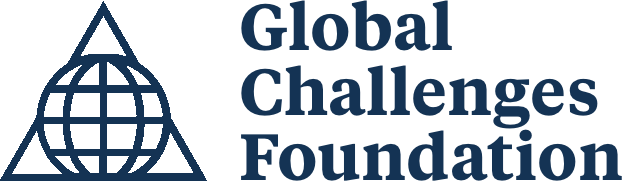

Global Resilience Council (GRC)
A "Security Council" for non-military threats.
Overview
The Global Resilience Council (GRC) project explored the need for a global governance mechanism capable of addressing major non-military threats facing the international community. Developed by the Foundation for Global Governance and Sustainability (FOGGS), the proposal responded to increasingly interconnected crises and to gaps in coordination across existing institutions.
Events such as the COVID-19 pandemic and the accelerating climate crisis highlighted how fragmented multilateral structures struggle with systemic shocks. The GRC was advanced as a United Nations body that could elevate responses to such crises and mobilize coordinated action across governments, international institutions, and other stakeholders.
Through research papers, expert discussions, and policy dialogue, FOGGS contributed to debates on global governance reform, including conversations linked to the UN Secretary-General's Our Common Agenda initiative.
Background and Context
The GRC proposal arose as global crises converged, revealing weaknesses in existing governance mechanisms. Pandemics, climate change, and economic disruptions increasingly intersect and cannot be addressed effectively within isolated institutional silos.
The COVID-19 pandemic caused widespread loss of life and generated secondary crises by diverting healthcare resources and reversing progress on poverty, inequality, and sustainable development. Climate-related disasters similarly cascade through economies and societies, threatening ecosystems, livelihoods, and human well-being.
Calls for upgrading multilateral governance intensified through the UN75 Declaration and the UN Secretary-General's Our Common Agenda report, which fed into preparations for the Summit of the Future. Within this context, FOGGS proposed a Global Resilience Council to help overcome fragmentation and deliver more effective responses to multidimensional global crises.
The Global Resilience Council Proposal
The GRC was conceived as a multilateral body focused on major global threats that fall outside the traditional scope of security institutions. While the UN Security Council concentrates on military conflict and geopolitical tensions, the GRC would address non-military threats that pose serious risks to human security and planetary stability, including global health crises, climate disruption, and systemic economic shocks.
Because these challenges cut across sectors, the GRC would help mobilize coordinated action across the wider UN system and the broader international community. It envisioned a limited number of states and regional integration organizations as core members, with observers from UN agencies, other intergovernmental organizations, and diverse non-state actors. Scientific advisory bodies and expert communities would inform decision-making.
The proposal also introduced an Intergovernmental Leadership Council (ILC) as a companion mechanism. The ILC would provide a platform for representatives of existing intergovernmental bodies to coordinate actions and develop joint programs, serving as a first step toward overcoming fragmentation in global governance.
Project Activities
The GRC initiative combined research, policy analysis, and stakeholder engagement. FOGGS produced background papers and discussion notes on institutional design and policy implications, examining how a council could respond to global health emergencies, climate risks, and other systemic challenges while fitting into existing UN structures.
The project engaged with the broader policy community on global governance reform, with particular attention to the UN Secretary-General's Our Common Agenda and proposals to strengthen multilateral cooperation ahead of the Summit of the Future.
Consultations brought together representatives from governments, international organizations, think tanks, civil society organizations, scientific associations, and the private sector to examine institutional options for strengthening global resilience.
Events and Dialogues
-
Public Webinar — Time to Rethink the UN – Addressing Major Threats to Human Security — 24 March 2022
Co-organized by the Global Governance Forum and FOGGS, the session examined reforms needed to tackle major non-military threats to human security, including proposals on global risks, UN reform, and the potential role of a Global Resilience Council. Speakers: Augusto Lopez-Claros (Global Governance Forum), Harris Gleckman (FOGGS), Maria Fernanda Espinosa (Coalition for the UN We Need), Arthur Dahl (International Environment Forum), Yvonne Rademacher (FOGGS). Moderated by Nik Gowing.
-
Virtual Informal Roundtable — A Common Agenda for Global Resilience through a More Inclusive Multilateralism — 18 February 2022
Brought together representatives from think tanks, scientific associations, civil society organisations, the private sector, and local authorities to discuss global governance reform in the context of the UN Secretary-General’s Our Common Agenda. The conversation explored the GRC proposal and ways non-state actors could strengthen multilateral cooperation.
-
Virtual Informal Roundtable — Our Common Agenda and the Future of Multilateralism — 27 January 2022
Gathered UN Permanent Missions, UN entities, and international think tanks to review proposals in the Our Common Agenda report, discuss institutional reform options, and consider political pathways toward the Summit of the Future.
Publications and Related Resources
FOGGS Background Papers
- Brainstorming Note on the Global Resilience Council (31 March 2021)
- FOGGS - Critical Review of the UN Secretary-General's Our Common Agenda: Discussion Paper (November 2021)
- Global Resilience Council - Climate Discussion Paper
- Global Resilience Council - Pandemics Discussion Paper (June 2022)
- Global Resilience Council Revisited
Selected External References
- Global Diplomacy and Cooperation in Pandemic Times: Lessons and Recommendations from COVID-19 - The Lancet COVID-19 Commission (2021)
- Improving Responses to Global Shocks - Recommendations for the Our Common Agenda Process - Development and Peace Foundation (SEF) (2021)
- Towards a Global Environment Agency: Effective Governance for Shared Ecological Risks - Global Challenges Foundation (2021)
- Interview with Georgios Kostakos on the Climate Summit (COP26) - Athens Voice (2021)
- New Shape Forum presentation by Georgios Kostakos - Global Challenges Foundation (2021)
- Governing Our Climate Future - Interim Report - Climate Governance Commission (2021)
- Fulfilling the UN75 Declaration's Promise: Expert Series Synthesis - Club de Madrid (2021)
- UN75 Declaration Expert Series Readout #2 - Stimson Center (2021)
- Reform Options for Effective UN Sustainable Development Governance - German Council for Sustainable Development (2021)
- Global Governance Resources: Foundation for Global Governance and Sustainability - Baha'i International Community (2021)
- A New Narrative of Hope and a Global Resilience Council for UN75+25 - Public Lecture (2020)
- Climate Governance Commission resources - Global Governance Forum
Funding
The Global Resilience Council initiative was supported by the Global Challenges Foundation.

The Global Challenges Foundation is a Stockholm-based non-profit organisation dedicated to promoting the creation and development of improved global decision-making models aimed at reducing and mitigating global catastrophic risks. Its vision is a world in which effective and fair mitigation of global catastrophic risks secures a safe and just future for all. To that end, the Foundation raises awareness of significant risks facing humanity, facilitates constructive dialogue between policymakers, researchers, and experts, promotes networks and initiatives developing governance solutions, and advocates for improved governance of global risks through reform processes. The Foundation only supports activities that are not politically or religiously affiliated.